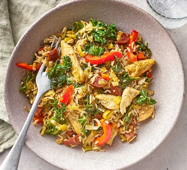

Chicken, leek & brown rice stir-fry

 20 min |
20 min |
 Serves 4
Serves 4
Combine the classic flavours of chicken and chorizo with kale and rice for a substantial yet speedy dinner, taking less than 20 minutes to make.
00:00